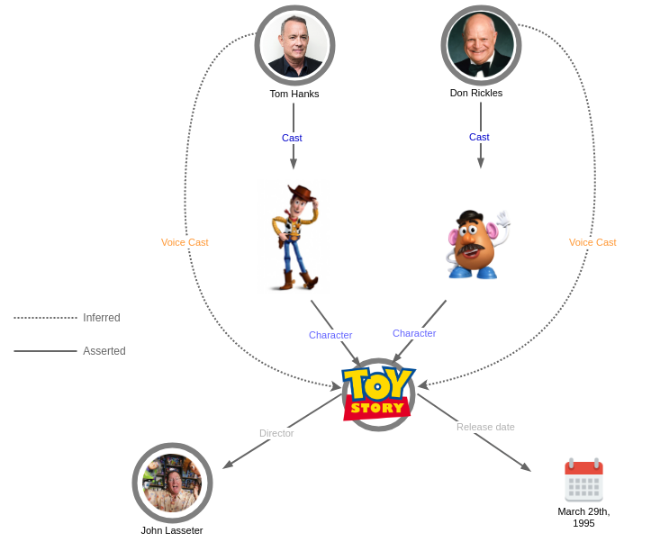

Understanding Knowledge Graphs
This section will help you understand knowledge graphs and related standards and technologies.
What is a knowledge graph?
A knowledge graph is a graph structure that links entities together. The links between the entities contain knowledge, based on how they connect to each other. For example, an apple can be connected to a tree (to show that it grows on trees) or in another case connected to a pie recipe (to show that it is part of a recipe). It is a formalized knowledge that enables programmatical reasoning about concepts in the world around us.
In this introduction to knowledge graphs the authors conclude that there is no clear definition of what a knowledge graph is. The term itself was coined in 2012 by Google as they introduced their Knowledge Graph as a mean of finding more relevant related search results by linking connected data on the web. As an idea, knowledge graphs are similar to semantic networks which date back to the 60’s and 70’s. The difference mainly lies in the size of the network, with knowledge graphs being larger. Knowledge graphs are also often generated in a rather manual way (data ingestion, data cleaning) instead of being generated and governed by a set of strict logical rules.
For a further introduction to knowledge graphs the “What is a knowledge graph” video from the CS520 Stanford course is a good resource.
The graph structure
A knowledge graph consists of entities (nodes) that are connected to each other with relations (edges).
The entity is an object with properties that describe it. For example, a person, a company, an event, a thing… These properties can be called the entity’s “metadata”.
The relation describes how entities are connected. For example, being member of, visiting a place, belonging to a country…

It’s worth noting that having this graph data structure makes it easy to add new data into an existing graph by connecting new entities and new relations.
Describing knowledge in a graph
After deciding what concept or idea that we wish to model in a knowledge graph, we need to collect the metadata that describes our entities. In order to make our data interoperable with other data and to allow us to import data from existing sources we should use a shared language when describing entities and relations. This is achieved using an ontology.
The ontology is a kind of dictionary containing types that can be used to describe entities. The metadata is created by picking a type from the ontology that matches what you wish to describe and defining the properties of the chosen type. E.g. a person can be described by a Person type. The name of the person can be encoded in a givenName property. This results in a set of data that can be processed both by humans and computers (as it is structured).
For example, in the image below, you can see that the entity Toy Story with a property Release date that has the value March 29th, 1995 and the Director property with the value John Lasseter.
Inferring new data from existing relationships
Since the entities are encoded using well-defined ontologies it allows us to draw conclusions based on the data we have and create new inferred data. This is done by giving the knowledge graph to an inference engine that can apply a set of logical rules to the data to derive new information. For example, if we have a knowledge graph containing persons and their birth year we could create an inference engine with rules that determine whether a person is a child or a retired person.
In the second example below, we have Toy Story, it has characters (using the relation called Character) and we have asserted the cast of characters. Having defined this, we can now define a rule that instructs the inference engine to create new relations Voice Cast whenever we find the Cast of a Character. This enables us to query the graph and directly get Toy Story’s voices cast without having to navigate through its Cast first.

In reality inferring knowledge is a complex topic. This video lecture shows some real-world examples of algorithms and rules for inference engines. E.g. reasoning about a persons creditworthiness based on what their home address is or trying to spot fake papers that have been submitted to a journal.
Growing a knowledge graph
A graph is a flexible data structure, and an ontology can evolve as new data comes in. As a result, data can continually be added to help serve new use cases.
The illustration below shows how the initial graph representing Toy Story can be augmented to capture many other related domains such as:
- Toy Story’s similar movies (e.g. Cars)
- Cities and associations related to motion picture production (e.g. Motion Picture Association of America)
- Places and people connected to animation movies (e.g. Steve Jobs)
Encoding knowledge graphs: RDF, JSON-LD, and other standards
RDF
How do you encode knowledge graphs in a way that is interoperable with other applications and can be integrated with other data sources? You use some common formalism, a language, to describe your entities and relationships. For knowledge graphs this format is RDF. RDF (Resource Description Framework) is a data format where every piece of knowledge can be broken down into a structure (subject, predicate and object) called triple.

RDF-formatted data can be queried using a query language such as SPARQL. This allows us to create applications that can process knowledge graphs, for example, to infer new data or get answers to questions we may have for the data that is stored in the knowledge graph.
JSON-LD
RDF is however only a part of what we need in order to encode a graph. We also need an implementation, a “concrete RDF syntax” that shows how to write down an RDF-formatted graph in a format that can be shared e.g. between applications. One syntax that can be used is JSON-LD. It stands for JSON for Linking Data.
We start by looking at a simple JSON example:
[
{
"title":"Floating island",
"author":"Unknown"
},
{
"title":"Apple balloon",
"author":"Grant Achatz"
},
{
"title":"Opera",
"author":"Cyriaque Gavillon"
}
]
After reading the above JSON we can ask ourselves what this data describes? If we don’t recognise the names we may think these perhaps are titles of books or movies. There is clearly a lack of context resulting in an ambiguity. JSON-LD allows to solve the ambiguity problem by enabling a semantic-preserving data encoding. This is achieved by adding an @context object where every key is associated with an identifier.
If we extend the JSON example with the payload below, then both a machine and a human can look up the context to find out that the JSON refers to recipes. I.e. Floating island, Apple balloon and Opera.
[
{
"@context":"https://json-ld.org/contexts/recipe.jsonld",
"title":"Floating island",
"author":"Unknown"
},
{
"@context":"https://json-ld.org/contexts/recipe.jsonld",
"title":"Apple balloon",
"author":"Grant Achatz"
},
{
"@context":"https://json-ld.org/contexts/recipe.jsonld",
"title":"Opera",
"author":"Cyriaque Gavillon"
}
]
In the JSON-LD playground you can try examples of JSON-LD.
Using Schema.org as a common vocabulary
Having defined a grammar (RDF) and a concrete syntax (JSON-LD) to encode knowledge graphs, there is one more thing to add in order to achieve interoperability with other knowledge graphs. We need a common vocabulary that defines which properties an entity should have - an ontology.
One such ontology that is commonly used is the Schema.org vocabulary. You can look up how different concepts are described by searching for them on the schema.org web page. For example, a video game entity is described by properties such as cheatCode or gamePlatform.
Reasoning with OWL
If you wish to reason about knowledge that is stored in a knowledge graph it is useful to have a language that can express properties and relations for the entities in the ontology (the dictionary) that your knowledge graph consists of. OWL (Web Ontology Language) is such a language. It is built on top of RDF (which can be seen as the grammar for OWL) and it is different from JSON-LD, since JSON-LD merely describes the syntax we use to encode our knowledge graph.
With OWL you can form axioms and expressions for the entities in your ontology. For example, expressing that a woman is a subclass of a person:
SubClassOf( :Woman :Person )
References and resources:
The sections below contain references and resources that can be used to learn more about knowledge graphs.
-
Introduction: What Is a Knowledge Graph? in Knowledge Graphs: Methodology, Tools and Selected Use Cases
Author: Fensel, Dieter et al
Published: Springer International Publishing, 2020
DOI: 10.1007/978-3-030-37439-6_1 -
What are some knowledge graph inference algorithms?
Published: 23.04.2020, Youtube.com -
What is the role of knowledge graphs in machine learning? - Challenges for explainable AI
Published: 20.05.2020, Youtube.com -
Programming the Semantic Web
Author: Segaran, Toby et al
Published: O’Reilly Media, Inc., 2009
ISBN: 9780596153816 -
What is a knowledge graph?
Published: 23.04.2020, Youtube.com -
RDF 1.1 primer
Author: W3C Working Group
Editors: Schreiber, G., Raimond, Y
Published: 24.06.2014 -
JSON-LD 1.1
Editors: Kellogg G., Champin P-A., Longley D.
Published: 16.07.2020 -
JSON LD - curated resources
This is probably one of the best resources to start with if you are interested in JSON-LD. -
OWL 2 Web Ontology Language Document Overview (Second Edition)
Author: W3C Working Group
Published: 11.12.2012